In some cases, it might be enough to know that a model is giving the correct predictions most of the time, without worrying too much about how it arrived at that decision. If a medical classifier worked 99.9% of the time, I wouldn’t question it – I would try to figure out what to do next in the treatment plan. That said, in many situations, we might want to attribute model performance to a few characteristics of the data. This is often the case when we are using a model as a proxy for understanding a little more about the (biological, business, environmental, political, social, …) processes that generated the data. In these notes, we’ll review a few types of summaries and visualizations that can help with these attribution tasks.
For (sparse) linear and logistic regression models, we can inspect the fitted coefficients \(b\). If we have standardized the data, then the coefficients with the largest coefficients lead to the largest change in the response / class probabilities, all else held equal. In particular, coefficients that are estimated to be 0 can be safely ignored.

Note that the fitted coefficient \(\hat{b}_{d}\) should be interpreted in context of all the variables in the model, not just the \(d^{th}\). This is because \(\hat{b}_{d}\) represents the effect of variable \(d\), after having controlled for the rest. To convince yourself that this important, you could try simulating data with two correlated predictors and seeing how the fitted coefficients compare to the uncorrelated predictor case.
- For tree-based models, there are no coefficients \(\hat{b}\) to use for interpretation. Instead, it’s common to consider the variable importance statistic. The importance of a variable measures the deterioration in a model when that variable is removed. If the model deteriorates substantially, then that variable is said to be important.

- Let’s see how we extract coefficients and variable importance measures in
sklearn.First, we’ll revisit the baseball prediction task. Earlier, we never actually discussed of the features were actually relevant. The block below reruns the code we had from before.
import pandas as pd
import numpy as np
from sklearn import linear_model
baseball = pd.read_csv("https://github.com/krisrs1128/naamii_summer_2023/raw/main/assets/baseball.csv")
X, y = baseball.iloc[:, 2:], baseball["salary"]
model = linear_model.ElasticNet(alpha=1e-1, l1_ratio=0.5) # in real life, have to tune these parameters
model.fit(X, y)ElasticNet(alpha=0.1)In a Jupyter environment, please rerun this cell to show the HTML representation or trust the notebook.
On GitHub, the HTML representation is unable to render, please try loading this page with nbviewer.org.
ElasticNet(alpha=0.1)
baseball["y_hat"] = model.predict(X)
baseball["y"] = yLet’s sort the predictors by the sizes of their coefficients.
ranks = np.argsort(np.abs(model.coef_))
X.columns[ranks]Index(['AtBat', 'Assists', 'LeagueN', 'CWalks', 'Errors', 'CAtBat',
'NewLeagueN', 'RBI', 'Runs', 'HmRun', 'Years', 'CHmRun', 'CHits',
'DivisionW', 'Walks', 'PutOuts', 'CRuns', 'CRBI', 'Hits'],
dtype='object')The block below plots the features against the truth and the predicted values, for a few of the more important features.
 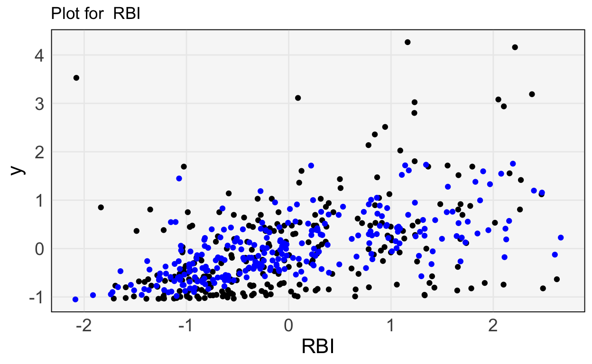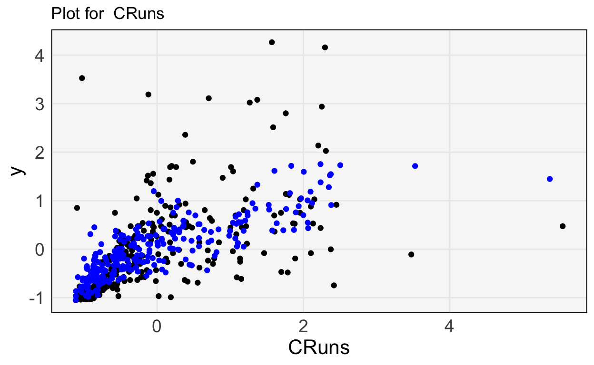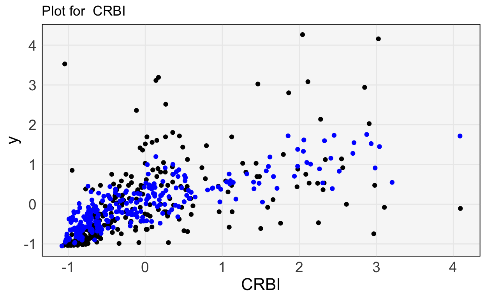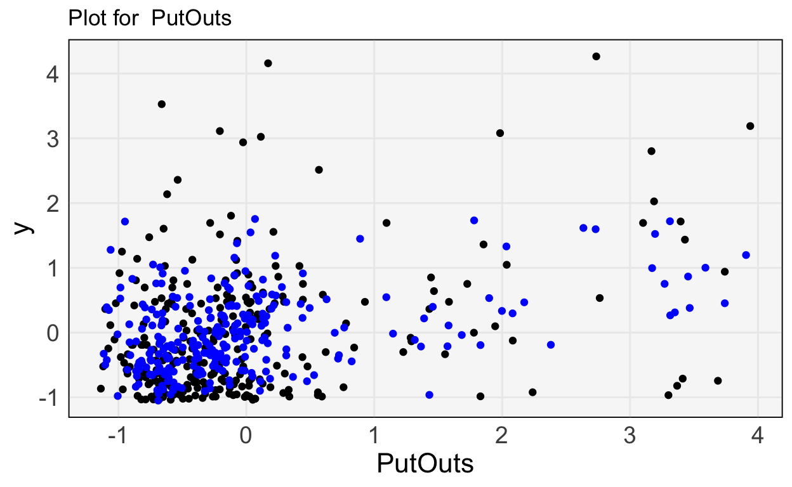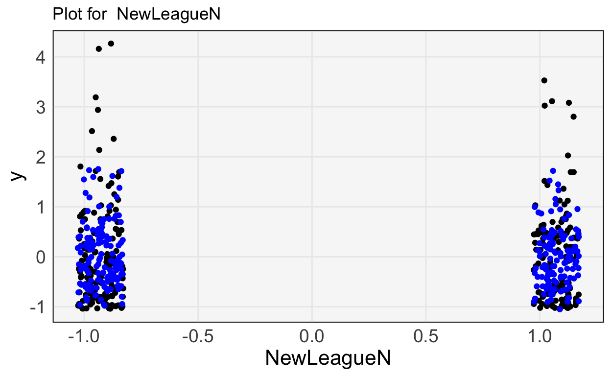
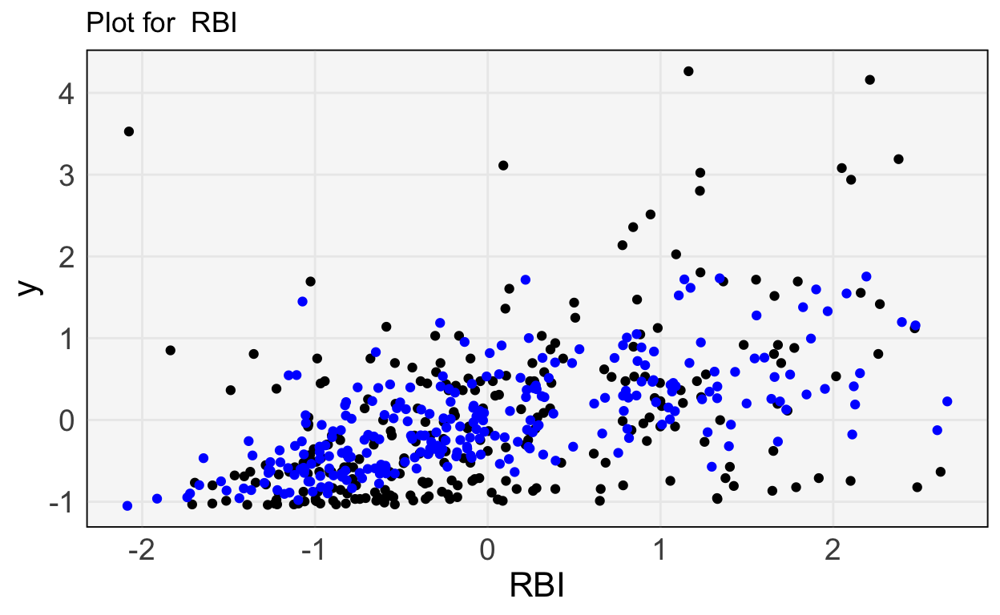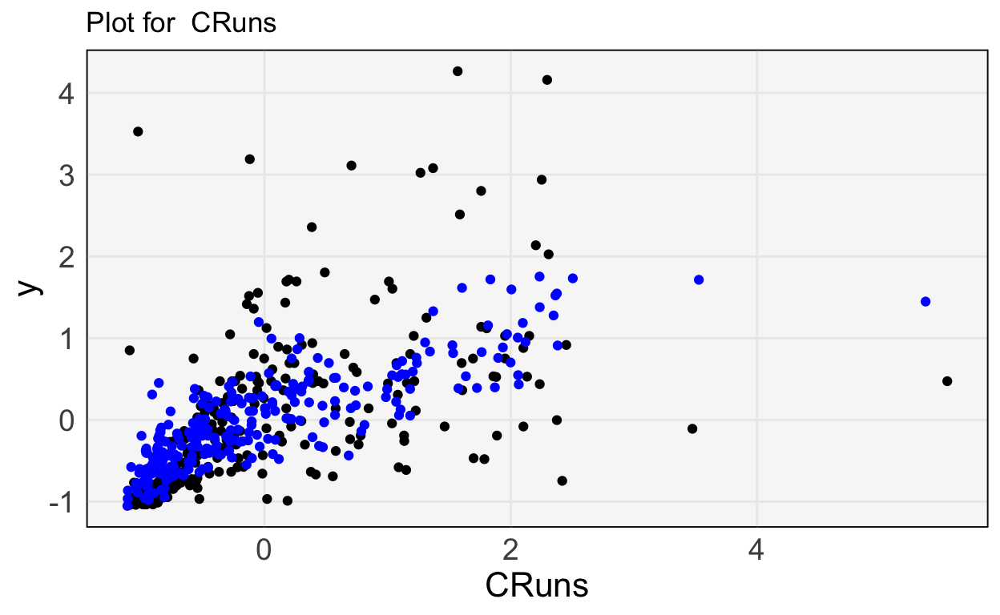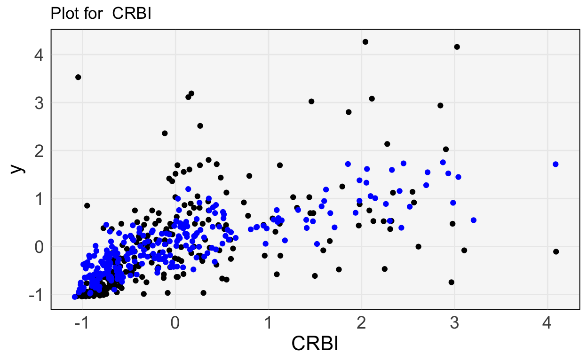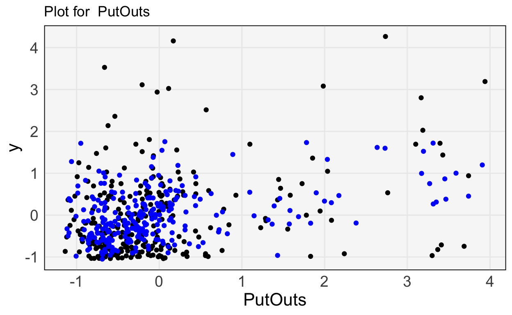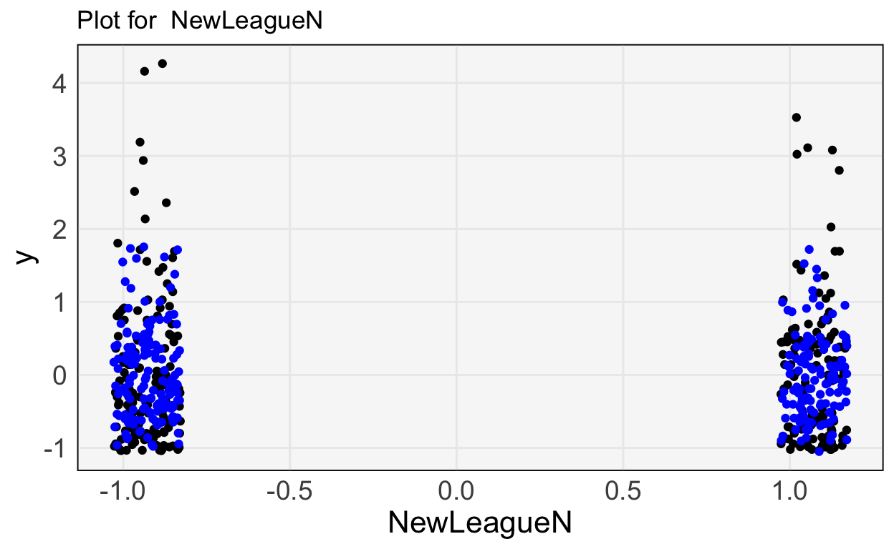
Error Analysis
Earlier, we discussed using a test set or cross-validation to evaluate how well a model performs on new data. A related, but deeper, question is to understand on which types of samples a model does better or worse. That is, instead of just asking how well a model performs on average, we may want to characterize situations where a model performs well and situations where it performs poorly. This can be used both to summarize the limitations of a model and guide future improvements.
Error Quantiles: One strategy to error analysis is to take samples from different quantiles of the error distribution and then summarize their associated features. Specifically, it’s possible to create a histogram of the squared error or cross-entropy losses on test samples. Take samples in the far right tail – these are those with very large loss. What characteristics do they tend to share?

- Error Prediction: A related approach is to use the sample-level test set errors from the previous step and use them as features in a new model from a different model class. The features that help distinguish low and high-error samples can be used to identify regions of poor performance. Note that, if it’s possible to do better than a random baseline, then there is systematic structure remaining in the data that has not been used by the original model class.
Visualizations
As more complex models become more common in practice, visualization has emerged as a key way for (a) summarizing their essential structure and (b) motivating further modeling refinements. We will discuss the role of ceteris paribus and partial dependence profiles.
We will write \(x^{d \vert = z}\) to denote the observation \(x\) with the \(d^{th}\) coordinate set to \(z\). How should we describe the effect of changing the \(d^{th}\) input on predictions made by complex models \(f\left(x\right)\)? As a thought experiment, consider the example below.

The surface is the fitted function \(f(x)\), mapping a two dimensional input \(x\) to a continuous response. How would you summarize the relationship between \(x_1\) and \(y\)? The main problem is that the shape of the relationship depends on which value of \(x_2\) we start at.
- One idea is to consider the values of \(x_2\) that were observed in our dataset. Then, we can evaluate our model over a range of values \(x_1\) after fixing those values of \(x_2\). These curves are called Ceteris Paribus (CP) profiles The same principle holds in higher dimensions. We can fix \(D−1\) coordinates of an observation and then evaluate what happens to a sample’s predictions when we vary coordinate \(d\). Mathematically, this is expressed by \(h_{x}^{f, d}\left(z\right) := f\left(\mathbf{x}^{d\vert= z}\right)\)


To summarize a set of CP profiles, we can take their average across the dataset. This is called a partial dependence (PD) profile. It is a more concise alternative to CP profiles, showing one curve per features, rather than one curve per sample.
We can visualize the CP profiles using the
partial_dependencefunction insklearn. Let’s apply it to the gradient boosting classifier we used for the penguins dataset. The block below refits the gradient boosting model.
from sklearn.ensemble import GradientBoostingClassifier
import pandas as pd
penguins = pd.read_csv("https://raw.githubusercontent.com/krisrs1128/stat679_code/0330ce6257ff077c5d4ed9f102af6be089f5c486/examples/week6/week6-4/penguins.csv").dropna()
model = GradientBoostingClassifier()
X, y = penguins[["bill_length_mm", "bill_depth_mm"]], penguins["species"]
model.fit(X, y)GradientBoostingClassifier()In a Jupyter environment, please rerun this cell to show the HTML representation or trust the notebook.
On GitHub, the HTML representation is unable to render, please try loading this page with nbviewer.org.
GradientBoostingClassifier()
We now compute partial dependence scores for one of the features,
bill_length_mm. This will give us a sense of how the three class probabilities
change as we vary the bill length, all else held equal.
from sklearn.inspection import partial_dependence
pd_data = partial_dependence(model, X, ["bill_length_mm"], kind="both")At this point, we can visualize the CP curves. Each penguin has three lines below, one for each class. Classes are differentiated by color. As expected, when the bill length is lower, the probability of being an Adelie species is much higher – the top left has much more light green.
I’ve hidden the code used to visualize them, because it is a bit more involved than everything else covered so far. That said, you can read the original source on the github page.
To make the trends easier to read, we can also average the CP profiles to get the partial dependence profiles. This makes the relationship between beak length and species type clearer. Notice that for larger beak lengths, we put about 50% probability on either Chinstrap or Gentoo. This is consistent with what we’d observed in the original 2D plot – those penguin species have about the same beak lengths, just different beak depths. While that pattern was clear directly in this example, in situations with more features, this approach to visualizing model fits will help discover relationships that were unknown in advance.
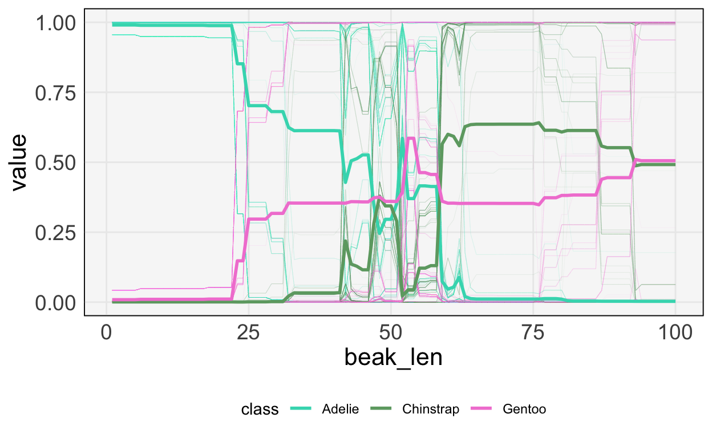